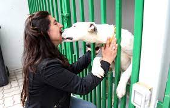
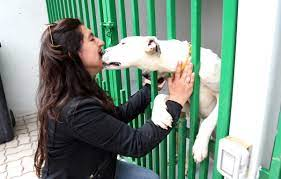

Adopta ahora
Perritos adoptados
Te mostramos algunas imágenes de estos hermosos perritos que por fortuna ya consiguieron un hogar, donde les brindan amor:


 


Felicidad instantánea
Adoptar a un animal supone salvar dos vidas, un viejo mantra de las protectoras que hace referencia a la vida del animal adoptado y al hueco que queda para rescatar a otro.
No compres!, adopta ahora
Pero quien adopta uno, jamás se arrepiente. Pronto se da cuenta de que a pesar de los temores de que no esté bien enseñado o de que tenga una mal carácter, adoptar un perro, aunque sea un poco más mayor, es una experiencia única.
Te gustaría obtener más información sobre como ayudar y adoptar: